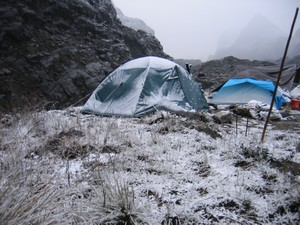
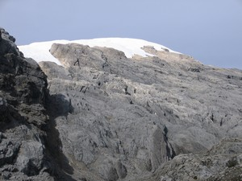
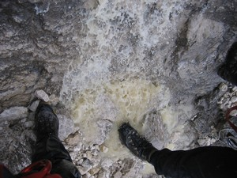

Navigation
- Carstensz Pyramid
- PROGRAMS & SCHEDULE
- Our most imporant expeditions
- LAST CARSTENSZ REFERENCIES
- History of climbing the summit
- Legendary Carstensz climbers
- Seven Summits
- 7 Summits - History
- 7 faces of Carstensz Pyramid
- Photos from climbing
- The nature and flora
- Trekking around Carstensz
- Climbing routes to the summit
- 7summits Carstensz best Base camp
- The Tribes and People
Climate and weather
- Climbing permits
- How to go
- The Highest Mountain of Papua New Guinea
- Why to go with us
- Malaria
- Wrote about us
- References
- Links
- Contact us
- Download


Carstensz Pyramid (Puncak Jaya) – climate and weather
.JPG)
Carstensz Pyramid – weather near the Zebra WallPhoto©JahodaPetr.com
The climate of the Carstensz Pyramid, and its nearest surroundings, are quite diverse(see Carstensz Pyramid geography data. During the day the temperature rises from 12°C (53, 6 F), up to 37°C (98, 6°F). At night the temperature near the Base Camp decreases to k –8°C (17, 6°F). The temperature on the summit of the Carstensz Pyramid might decrease even to below –10°C (14°F). Usually it rains for several hours during the day.
There are only few mountains world wide which you can climb up whenever – in any season. Each mountain has periods of good and bad weather. It is said that the Carstensz Pyramid is an exception. It is said that you can climb up this mountain any time of the year. It has only one stable period of bad weather. Unfortunately, I can confirm this piece of information. Pilots say that there are only four days of nice weather on the Carstensz Pyramid in a year. The problem is that they can't say on which days those are.
.JPG)
Carstensz Pyramid is sometimes covered with a lot of snow (Wiew from Carstensz ridge) Photo©JahodaPetr.com
Papuan island New Guinea lies almost on the equator. The summit of the Carstensz Pyramid is only a bit over 4° from it. Despite that, there are glaciers on the summits of the surrounding mountains, and it is not unusual for it to snow. The route to the mountain can be undertaken as a several day long trek starting 2000 m (6560 ft) above the sea level. This means that you hike through a rain forest, and then through a foggy forest. This is followed a tableland situated some 3500 m (11500 ft) above the sea level. In all these areas, it can rain for several hours a day. Yearly precipitation amounts to 5, 5 m (18 ft), and in higher mountain ranges, rain can quickly change into snow. Many times I experienced morning snowfall even in the Base Camp which is at 3800 m (12467 ft).
During the climb to the summit of the Carstensz Pyramid, you must set out at night. It is needed because the trip to the highest point takes some 12 – 15 hours. Dawn breaks at about 5 a.m, and at 14 p.m. at latest it starts to rain or snow on the Carstensz Pyramid. Sometimes it is even earlier (around 11 a.m.). That's why it is reasonable to return as soon as possible. Even then, during the ascent it might rain, the sun may shine, or it might even snow. Unexpected changes in the weather here are very quick. When a downpour comes, you have to rope down several hundreds of meters, through river streams and waterfalls. We have even experienced regular canyoning at the height 4500 m (14764 ft). I can't imagine climbing up the Carstensz Pyramid without high quality outdoor equipment?
Carstensz Pyramid Motto:
The weather of the New Guinea Island is largely dependent on a specific territory. This applies to the Western Papua. In the mountains, there is a rain period every day!

Carstensz Pyramid – snow in the base Camp is not a surprise – Equator (3800 m (12467 ft) Photo©JahodaPetr.com

Carstensz Pyramid – some times you can se also see a blue sky. This is a view on Nga Pulu Photo©JahodaPetr.com
.JPG)
Carstensz Pyramid ridge – blue Sky. Photo©JahodaPetr.com

Carstensz Pyramid wall – Canyoning on the wall. Photo©JahodaPetr.com